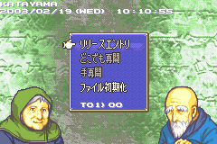
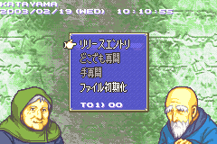

Fire Emblem - Rekka no Ken (Japan) (Beta) (2003-02-19)
SRAM 256K Save Format Spec gbakit Built-In
Cartridge Identity
- Game Code
AFEJ(FamilyAFE)- Header Title
FIREEMBLEM6- Maker / Revision
01/ rev0- ROM Size
- 16.0 MiB (16,777,216 B)
- Save Media
SRAM 256K- SHA-256
f08ba500343d0663525d5e8b9c739047f7646108e746fcb35c15d58faa19b1ea- Engine / SDK Group
comm-009(51 families)
Screenshots


Battery Save Format Specification
Open Full Save Format SpecDownload Sample .sav (32,768 B)Download save-format.json
- Specification Coverage
- 26 mapped fields · 4 verified checksum(s) · Confidence: MEDIUM
- gbakit Built-In Support
- Built-in (AFEJ)
gbakit save verify AFEJ save.sav
gbakit save decode AFEJ save.sav
gbakit save fix AFEJ damaged.sav -o repaired.savObserved Battery Save Layout
- Fill Byte & Active Size
0xFFfill · 276–276 / 32,768 B active (entropy 0.52 bits/B)- Active Offset Ranges
0x0–0x63,0x7038–0x70BF,0x70F8–0x711F(3 total)- ASCII Magic / Headers
AGB-FE7- Observed Variable Regions
- 2 bytes across 2 spans:
0x7103,0x7109 - Candidate Checksum/Counter Spans
0x7103,0x7109- Integrity Check
- Confirmed at
0x7103
Hardware MMIO Subsystems
ppu_display0x8001230
Regional Variants & Revisions (Family AFE)
- Fire Emblem - Fuuin no Tsurugi (Japan) (
AFEJ, 8 MiB) - Fire Emblem - Fuuin no Tsurugi (Japan) (Virtual Console) (
AFEJ, 8 MiB) - Fire Emblem - Rekka no Ken (Japan) (Beta) (2003-02-06) (
AFEJ, 16 MiB) - Huo-Wen Zhanji - Fengyin Zhi Jian (China) (Proto) (
AFEC, 16 MiB)